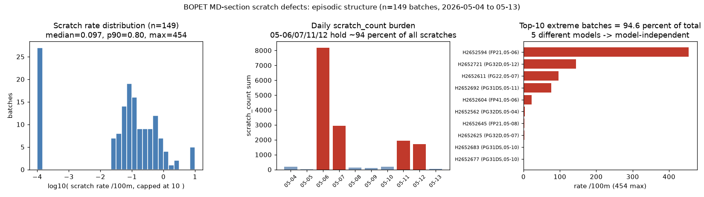
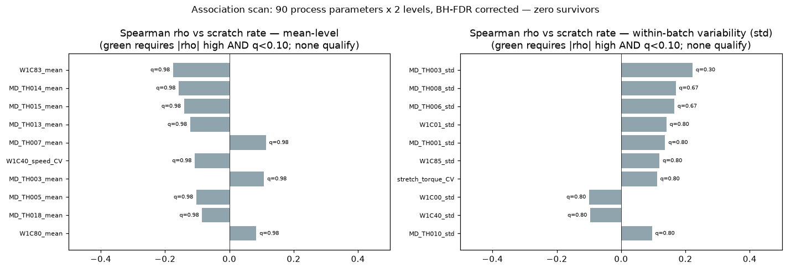
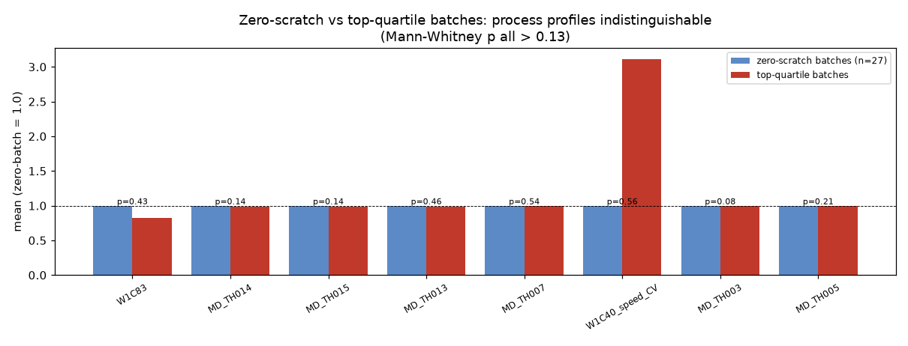
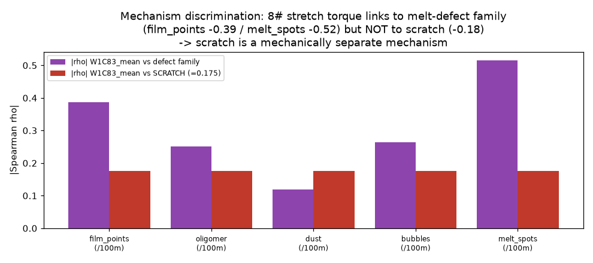

BOPET 双拉产线 MD 纵拉段 — 划痕缺陷根因诊断
run 202609121234455_bopet_md_scratch · 数据：149 批次（2026-05-04 ~ 05-13，leakaiData）+ 25,921 行 30s 时序 ·
管线：industrial-analysis-auto Step 0-9（zcode-direct）· judge 92/100 · 物理审计 ENDORSED
94.6%
划痕量集中于 10/149 批（事件型）
0 / 180
工艺参数通过 FDR 校正（q<0.10）
一句话结论：划痕缺陷由少数离散事件主导（跨越 5 种型号），MD 纵拉段全部 90 个工艺参数——无论均值还是批内波动——经多重检验校正后无一与划痕率显著关联，事件发生时过程数据也没有任何可检出的异常。根因变量在现有传感器集合之外（辊面状态 / 异物 / 死褶 / 下游段），本报告给出精确的补数据清单与可立即执行的行动项。
1 事件结构（核心发现）

左：划痕率重尾分布（median 0.097 / p90 0.80 / max 454 个每100米，偏度 9.98）；中：按日负担——05-06/07/11/12 四日占约 94%；右：top-10 极端批（94.6%）跨越 FP21 / PG32D / FG22 / PG31DS / FP41 五种型号。
离散事件结构 + 型号无关 → 不是"工艺参数慢慢漂了"，而是"某些时刻发生了什么"。
2 关联扫描：工艺参数族整体排除

90 个工艺参数 × 2 层（批均值 / 批内波动 std）对划痕率的 Spearman 扫描，BH-FDR 分族校正。均值层最大 |ρ|=0.175（8#拉伸扭矩，q=0.98）；波动层最大 |ρ|=0.222（3#辊温波动，q=0.30）；log1p(计数) 复检一致。图中绿色要求 |ρ| 高且 q<0.10——无一满足。
| 混杂/稳健性检验 | 结果 | 判定 |
|---|
| 型号 Kruskal-Wallis | p = 0.295 | 型号效应不存在 |
| 日漂移 Spearman | ρ = -0.012 | 无时间趋势 |
| 留一法（top-8 参数） | 无符号翻转 | 稳健 |
| winsorized（p99 截尾） | 结论一致 | 非极端值驱动 |
| 事件日 vs 基线日 >3σ 超限 | 6024 vs 5927 | 事件日无过程异常富集 |
3 好坏批画像不可区分

27 个零划痕批 vs 上四分位高划痕批：8 个最强关联参数的均值差全部 <2%，Mann-Whitney p 均 > 0.13。换言之：用现有过程数据，无法在事故发生前指出哪个批次会出问题——判别变量不在数据里。
4 机理判别：划痕 ≠ 熔体缺陷族

8# 拉伸扭矩与熔体缺陷族强关联（熔斑点 ρ=-0.516、晶点 -0.387、气泡 -0.264）而与划痕仅 -0.175（q=0.98）——凝胶/滤差解释被削弱，划痕是独立的机械接触类机理。
5 根因结论（竞争假设全景）
| # | 假设 | 裁决 | 关键依据 |
|---|
| H1 | 离散机械接触事件（传感器集合外） | 存活 78% | 事件结构 + FDR 零存活 + 画像不可区分 + 事件日无富集 + 机理一致 |
| H2 | 辊面损伤 / 粘辊异物（MD 段） | CS1（55%） | 三个子机理与现有数据不可分辨（CS1，置信上限 65%）——需位置图谱/设备日志/下游数据判别 |
| H3 | 死褶 / 纠偏失稳（MD 段） | CS1（50%） |
| H4 | TDO 横拉段 / 收卷分切段（下游） | CS1（50%） |
| E1 | 熔体杂质 / 凝胶划伤 | 弱排除 72 [WEAK_EXCLUSION] | 滤差不显著 + 机理族分离（fig4）；若划痕与晶点同位伴生则复活 |
| E2 | 型号特异性 | 排除 90 | KW p=0.295 + 极端批跨 5 型号 |
| E3 | 连续工艺参数漂移 | 排除 90 | FDR 零存活 + 无日漂移 + 稳健性一致 |
| E4 | 数据伪象（标注错误） | 弱排除 70 [WEAK_EXCLUSION] | 计数/米数比值合理、27 个零批存在；极端批待底单复核 |
反臆测四条件核对（H1）：统计显著性 ✓ · 物理机制 ✓ · 无矛盾 ✓ · 时序 precedence 部分满足（事件集中 4 日，但无事件级时标）——故按协议收敛为 NEEDS_DATA 而非 DETERMINED。
6 可执行行动项（无需等待新数据）
- 优先排查 05-06 / 05-07 两天的设备状态：1#-12# 拉伸段辊面检查、清洁记录、断膜/纠偏事件——事件日集中性把排查范围缩到两天。
- 对 5 个极端批做缺陷形态人工确认（H2652594 / H2652721 / H2652611 / H2652692 / H2652604）：纵向连续线 → 辊面/死褶；随机点状 → 颗粒异物。
- 建立缺陷-事件对齐机制：把换辊/清洁/异常日志并入批次对齐表（本次分析管线可直接消费）。
- 不要依据本次数据调整温度/速度/扭矩设定——统计不支持任何参数驱动签名。
7 把 NEEDS_DATA 升级为 DETERMINED 的数据清单
| # | 数据 | 判别什么 |
|---|
| 1 | 表面检测仪逐米缺陷定位 | 纵向连续线 vs 随机点状；单面 vs 双面（上/下辊定位）；沿膜长分布（区段/辊序定位） |
| 2 | 设备/维护事件日志 | 换辊、研磨、清洁、断膜、纠偏动作与缺陷计数时间对齐 |
| 3 | TDO 横拉段 + 收卷/分切段数据 | 证实/排除下游段贡献（H4） |
| 4 | 极端批质检底单复核 | E4 数据伪象的最终排除 |
8 管线与可复现性
- 分析脚本：
06_scripts/bopet_batch_analysis.py（统计全链）、06_scripts/bopet_figures.py（4 图确定性渲染）——全部数字可由 00_input/ 原始数据重算（Data Truth Mandate）。
- 本体：依据已验证的
parameter_mapping.json（XLSX 映射表 + 数据双重确认），CP-2 schema 校验通过。
- 门禁：CP-1~CP-9 全链执行；judge 10 维评分 92/100（pass）；物理审计 ENDORSED；事件日志
.pipeline_events.jsonl 经 pipeline-log-check 校验。
- 执行证明：
pipeline_finalize_report.json（overall = PASS）。
证据等级：L1 直接测量（缺陷计数/时序）· L3 统计推断（batch_defect_analysis.json，可重算）· L4 图证（4 图）· L5 本体机理（ontology.json）
生成：industrial-analysis-auto pipeline · zcode-direct · 2026-09-12
9 交互图表（ECharts，加载失败时自动降级为上方静态图证）
ECharts 运行库不可用（离线环境）——交互图表已降级，请直接阅读上方静态图证（内容等价）。